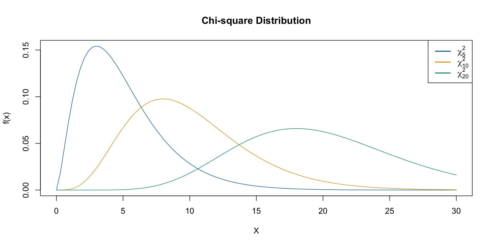
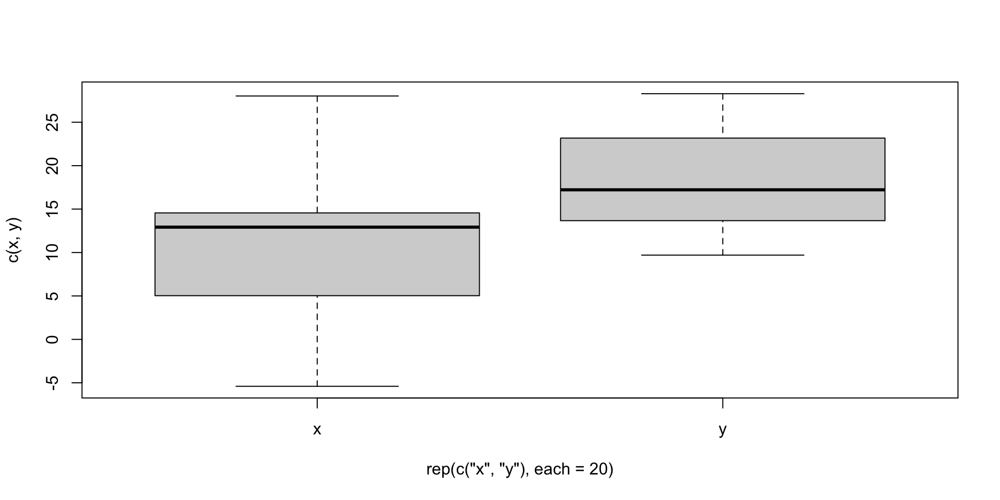
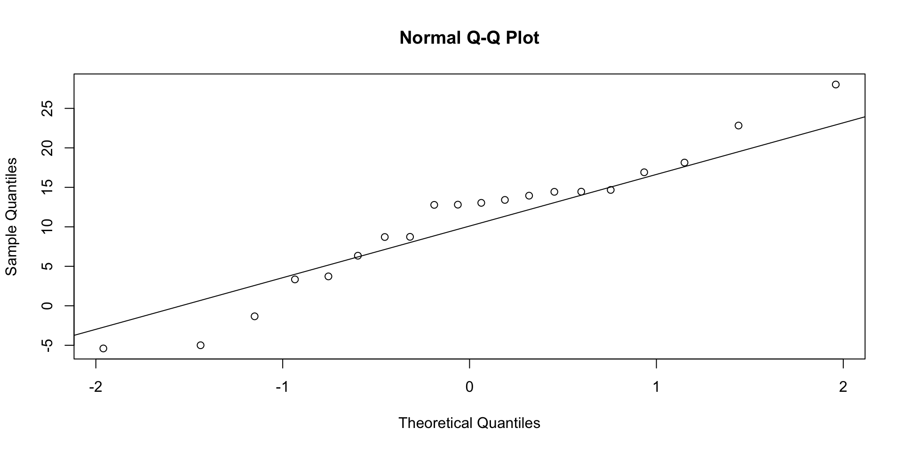
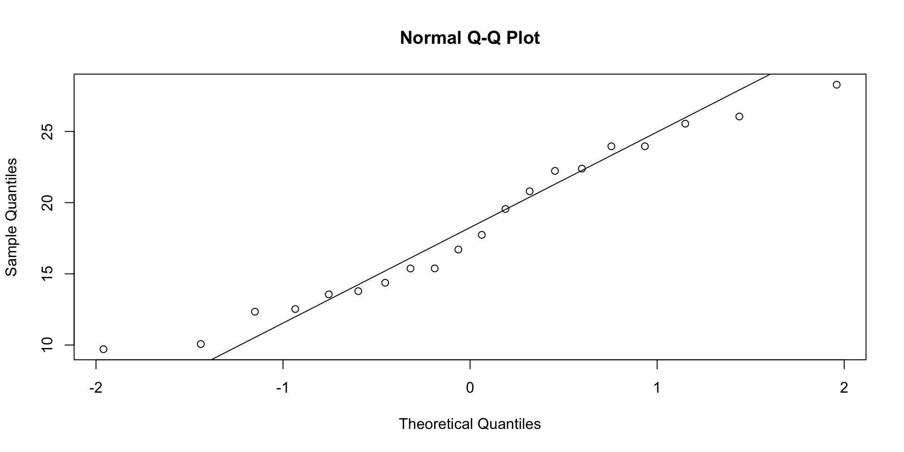

[1] 6.530527 26.047961[1] 2.55549 5.10372Confidence Interval for Population VariancesEstimation and Tests for Comparing Two Population Variances
Estimation and Tests for a Single Population Variance
Recall that the sample variance \(s^2 = \sum(y-\bar{y})^2/(n-1)\) is the point estimate of \(\sigma^2\).
For tests and confidence intervals about \(\sigma^2\) we use the fact that the sampling random variable \[(n-1) \, S^2/\sigma^2 = \chi^2\] has the Chi-square Distribution with \(n-1\) degrees of freedom or \(df\), when the sample is from a normal population.
The chi-square distribution is nonsymmetric.
Like the Student’s \(t\) distribution, there is a different curve for each sample size \(n\) i.e., for each value of df.
The distribution appear to be more skewed for smaller values of \(df\) and become more symmetric as \(df\) increases.
Because the chi-square distribution is nonsymmetric, the percentiles for probabilities at both ends needs to be tabulated.

This has the form: \[\frac{(n-1)s^2}{\chi_U^2} < \, \sigma^2 \, < \, \frac{(n-1)s^2}{\chi_L^2}\] where
Since \(df = n-1\) look up \(\chi_{n-1}^2\) percentiles.
\(\chi_L^2\) is the lower-tail value with area \(\alpha/2\) to the left.
\(\chi_U^2\) is the upper-tail value with area \(\alpha/2\) to the right.
The confidence interval for the standard deviation \(\sigma\) is found by taking square roots of both end points of above.
Let’s assume that the normal probability plot of the data appear to show that the sample is from a normal distribution. From the data \(n = 30\), \(\bar{y} = 500.453\), \(s= 3.433\) were calculated.
A 99% confidence interval for \(\sigma^2\) is computed as follows:
Since \(\alpha=.01\), \(\alpha/2=.005\) and \(1-\alpha/2=.995\), we compute
\(\chi_L^2 =\chi_{0.995,29}^2 = 13.12 \quad \chi_U^2 = \chi_{0.005,29}^2 = 52.34\)
Thus the endpoints for the required C.I. are, respectively,:
\(\frac{(n-1)s^2}{\chi_U^2} = \frac{29(3.433^2)}{52.34} = 6.53\)\(\frac{(n-1)s^2}{\chi_L^2} = \frac{29(3.433^2)}{13.12} = 26.05\)
Thus \((6.53,\ 26.05 )\) is a \(99\%\) C.I. for \(\sigma^2\)
Taking square roots of both endpoints of the interval for \(\sigma^2\):
we get \((2.56,\ 5.10 )\) as a \(99\%\) C.I. for \(\sigma\).
Thus we are \(99\%\) confident that the standard deviation of the weights of coffee containers lies in the interval \((2.56,\ 5.10 )\).
The filling machine was designed to be so that \(\sigma = 4\) grams, and since this value falls in the above interval, the machine satisfies the design specification for standard deviation.
A separate confidence interval for \(\mu\) is computed for checking whether the design specification for the mean is satisfied.
\[\frac{(n-1)s^2}{\chi_U^2} < \, \sigma^2 \, < \, \frac{(n-1)s^2}{\chi_L^2}\]
Test:
\(H_0: \sigma^2 \leq \sigma_0^2\) vs. \(H_a:\) \(\sigma^2 > \sigma_0^2\)
\(H_0: \sigma^2 \geq \sigma_0^2\) vs. \(\sigma^2 < \sigma_0^2\)
\(H_0: \sigma^2 =\sigma_0^2\) vs. \(\sigma^2 \neq \sigma_0^2\)
Test Statistic: \(\chi^2 = \frac{(n-1)s^2}{\sigma_0^2}\)
Rejection Region: for specified \(\alpha\) and \(df= n-1\),
Reject \(H_0\) if \(\chi^2 > \chi_U^2\), where \(\chi_U^2\equiv\chi_{\alpha,\,n-1}^2\)
Reject \(H_0\) if \(\chi^2 < \chi_L^2\), where \(\chi_L^2\equiv\chi_{1-\alpha,\,n-1}^2\)
Reject \(H_0\) if \(\chi^2 > \chi_U^2\), where \(\chi_U^2\equiv\chi_{\alpha/2,\,n-1}^2,\) or if \(\chi^2 < \chi_L^2\), where \(\chi_L^2\equiv\chi_{1-\alpha/2,\,n-1}^2\)
The above inferences are based on the assumption of sampling from a normal population.
They are more sensitive to departures from normality than the inferences about population mean.
We don’t have a CLT-type theorem which applies to \(S^2\) like we have in case of \(\bar{Y}\).
Always plotting sample data as a preliminary procedure - using boxplot or normal probability plot to look for skewness, or outliers, is recommended.
We will consider the case of independent samples from two populations having variances \(\sigma_1^2\) and \(\sigma_2^2\).
The main application is testing \(\sigma_1^2 = \sigma_2^2\).
Theory says that when the two populations are Normal, and sample sizes are \(n_1\) and \(n_2\) then the random variable \[F = \frac{S_1^2/\sigma_1^2}{S_2^2/\sigma_2^2} \qquad\] has the \(F\) distribution with degrees of freedom \(df_1 = n_1-1\) and \(df_2 = n_2 - 1\).
\(df_1\) is the degrees of freedom associated with \(S_1^2\).
\(df_2\) is the degrees of freedom associated with \(S_2^2\).
The \(F\) distribution is a two parameter family indexed by \(df_1\) and \(df_2\).
Some use the terms Numerator and Denominator degrees of freedom for \(df_1\) and \(df_2\).
The F-statistic is calculated as \[F_c = \frac{s_1^2/\sigma_1^2}{s_2^2/\sigma_2^2}\]
The lower tail values, when needed can be obtained by the relationship \[F_{1-\alpha,df_1,df_2}=\frac{1}{F_{\alpha,df_1^*,df_2^*}}\] where \(df_1^*=df_2\) and \(df_2^*=df_1\).
That is, to calculate a left tail probability, look-up the corresponding right tail probability after switching the numerator and denominator degrees of freedom.
For example \(F_{.95,3,10}\) is calculated using the above relationship as \(1/F_{.05,10,3}=1/8.79=0.11\)
And \(F_{.95,10,3}\) is calculated using the above relationship as \(1/F_{.05,3,10}=1/3.71=0.27\)
Test:
1. \(H_0: \sigma_1^2 \leq \sigma_2^2\) vs. \(H_a:\sigma_1^2 > \sigma_2^2\)
2. \(H_0:\sigma_1^2 = \sigma_2^2\) vs. \(H_a: \sigma_1^2 \neq \sigma_2^2\)
Test Statistic: \[F = \frac{s_1^2}{s_2^2}\] Rejection Region: For given \(\alpha\), \(df_1 = n_1-1\), and \(df_2 = n_2 - 1\).
1. Reject \(H_0\) if \(F \geq F_{\alpha,df_1,df_2}\)
2. Reject \(H_0\) if \(F \leq F_{1-\alpha/2,df_1,df_2}\) or \(F\geq F_{\alpha/2,df_1,df_2}\)
In order to test the hypothesis \(H_0: \mu_1 - \mu_2 = 0\) using a two-sample \(t\)-statistic with pooled sample variance, we need to assume \(\sigma_1^2 = \sigma_2^2\).
To check whether this is a valid assumption, let us formally test
\(H_0:\sigma_1^2 = \sigma_2^2\ vs.\ H_a: \sigma_1^2 \neq
\sigma_2^2\)
using \(\alpha=.05\)
The two independent samples gave sample variances:
\(s_1^2 = 0.105, \quad s_2^2 = 0.058\) with \(df_1=9\) and \(df_2=9\).
Test: \(H_0:\sigma_1^2 = \sigma_2^2\ vs.\ H_a: \sigma_1^2 \neq \sigma_2^2\)
Test Statistic: \(F_c=\frac{s_1^2}{s_2^2}=\frac{0.105}{0.058}=1.81\)
Rejection Region: \(F \leq F_{.975,9,9}\) or \(F\geq F_{.025,9,9}\)
From Table 8, using \(\alpha\) = 0.05, \(df_1 = 9\), \(df_2 = 9\), we have
\(F_{0.025,9,9} = 4.03\) and \(F_{0.975,9,9} = 1/F_{0.025,9,9}= 1/4.03=0.25\)
Thus we reject if \(F \leq 0.25\) or \(F\geq 4.03\).
Since \(F_c=1.81\) does not fall in the rejection region, we fail to reject \(H_0:
\sigma_1^2 = \sigma_2^2\).
Conclusion: The assumption of equal variances for the two populations appears reasonable.
\[H_0:\sigma_1^2 = \sigma_2^2\ vs.\ H_a: \sigma_1^2 \neq \sigma_2^2\]
What if we are instead interested in the test \[H_0:\sigma_1^2 \leq \sigma_2^2\ vs.\ H_a: \sigma_1^2 \gt \sigma_2^2\]
Say you have a dataset containing data with samples from two populations. We can use the var.test() function to perform the previous test.
\[H_0:\sigma_1^2 \leq \sigma_2^2\ vs.\ H_a: \sigma_1^2 \gt \sigma_2^2\]



[1] 2.308348[1] 0.03799438
F test to compare two variances
data: x and y
F = 2.3083, num df = 19, denom df = 19, p-value = 0.03799
alternative hypothesis: true ratio of variances is greater than 1
95 percent confidence interval:
1.064613 Inf
sample estimates:
ratio of variances
2.308348 Hartley’s \(F_{max}\) Test for Homogeneity of Variances
This test requires that independent random samples of equal samples sizes, \(n\), are drawn from \(t\) populations having normal distributions.
Test: \(H_0: \sigma_1^2 = \sigma_2^2=\ldots= \sigma_t^2\) vs. \(H_a:\) Not all \(\sigma^2\)’s equal
Test Statistic: \(F_{max} = \frac{s_{max}^2}{s_{min}^2}\) where \(s_{max}^2\)=largest sample variance and \(s_{min}^2\)=smallest sample variance
Rejection Region: For given \(\alpha\), reject \(H_0\) if \(F_{max}\) exceeds the tabulated percentile
When sample sizes are not all equal an approximate test is obtained if \(n\) is replaced with \(n_{max}\), where \(n_{max}\) is largest sample size, in the above procedure.
Hartley’s test is quite sensitive to violation of the normality assumption.
Thus other procedures that do not require the normality assumption, such as Levene’s test has been proposed.
Levene’s test is too cumbersome to calculate by hand; so software may have to be used.
Levine’s test procedure is less powerful than Hartley’s test when populations have normal distributions.
STAT 801A